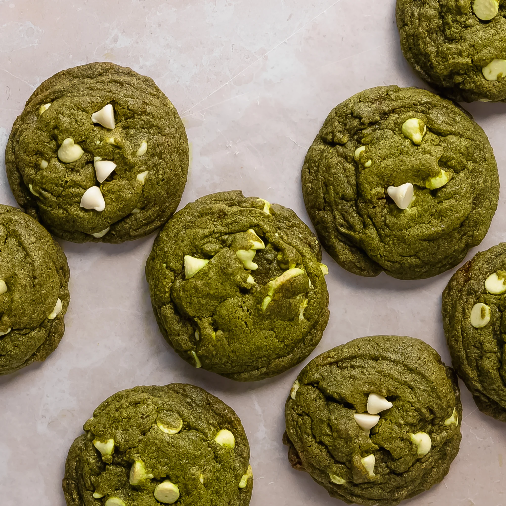

My daughter learned to make these cookies at a baking camp at Zingermanns and has tweaked the recipe to fit the taste buds of her siblings. They are extremely sugary so the salt helps to balance it. Note, these cookies are best eaten very quickly.
Recipe Ingredients
Unsalted butter
Granulated Sugar
Packed light or dark brown sugar
Large egg
Pure vanilla extract
Semi-sweet chocolate chunks (melted)
All-purpose flour
Natural unsweetened cocoa powder
Baking soda
Salt
Semi-sweet chocolate chunks
Recipe Steps
In a mixing bowl cream together the butter, granulated sugar, and brown sugar
Add the egg and vanilla extract and beat well
Add the melted chocolate
In a separate bowl combine the flour, baking soda, cocoa powder and salt
Combine the wet and dry ingredients
Add the unmelted chocolate chunks.
Form 15 cookies and place on a baking sheet.
Cook for 12 to 13 minutes at 350 degrees.
Additonal Food Images
Crunchwrap Supreme
Origin: Mexico
Source: Taco Bell Website
Category: Main Dish
The notorious Crunchwrap Supreme created by the infamous Taco Bell. Taco Bell is the best fastfood out there. When you're hungry it hits the spot constanlty bursting with flavor. Many people might not favor taco bell because of how unhealthy it is but there are many taco bell chains out there than actual mexican places.
Recepie Ingredients
Tortilla
Ground Beef
Circular Taco Shell
Cheese
Lettuce
Sour Cream
Melted Cheese
Diced Tomatoes
Taco Bell Seasoning
Cheese Sauce
Recipe Steps
Make the ground beef with taco seasoning, season it well with spices and Taco Bell spices from Target
Lay the tortilla on the grill and put cheese sauce on top of it, smooth it out in a circular motion, and be generous with the amount
Next, put the circular crunch taco shell on top of it while adding a generous amount of sour cream on it, don't be shy!
Next add your seasoned to ground beef onto the tortilla
Finally, add your diced tomatoes, lettuce, and cheese.
Wrap your Crunchwrap pentagon style and then grill it on a hot pan for about 4 minutes on medium heat, both sides
Take it off the pan and then cut it in half and you have your Crunchwrap supreme
Additonal Food Images
Tomato and Egg
Origin: China
Source: Own Recipe
Category: Main Dish
Tomato and eggs is a hot dish which originated from China. It is a simple and fast dish to make, but it
has
good nutritional value. It is a very satisfying food to eat and popularly served with rice and topped
with
green onions.
Recipe Ingredients
Eggs
Salt
Sugar
Cooking oil
Tomatoes
Recipe Steps
Crack eggs into a bowl and mix until scrambled
Cut tomatoes into pieces around the size of your thumb
Oil a hot pan and cook the eggs until satisfied then remove the eggs
Re-oil the pan and cook the tomatoes until they loosen
Combine eggs and tomatoes and season with salt and sugar
Additonal Food Images
Matcha Cookies
Origin: Japan
Source: Own Recipe
Category: Main Dish

Matcha cookies are a delightful fusion of traditional cookie flavors with the unique and earthy taste of matcha green tea. These cookies feature a vibrant green hue and a subtle bitterness from the matcha powder, perfectly balanced with the sweetness of chocolate chips or other complementary ingredients. They're a popular treat among those who appreciate the delightful combination of matcha's herbal notes and the comforting familiarity of freshly baked cookies.
Recipe Ingredients
All-purpose flour
Matcha powder
Unsalted butter
Salt
Sugar
Egg yolks
Chocolate chips (optional)
Recipe Steps
Combine flour and matcha powder in large bowl
Sift the flour and matcha powder
Beat softened butter until smooth and creamy
Add salt and blend
Add sugar and beat until soft and light
Add egg yolks and mix until well combined
Gradually add flour and matcha mixture and mix until well combined
Add chocolate chips and mix until incorporated
Divide dough into two pieces. Shape each piece into cylinders about 1.5in in diameter
Wrap logs in plastic wrap and chill in fridge for at least two hours
Slice into ⅓ inch rounds and place on a baking tray lined with parchment paper
Bake at 350 degrees for 15 minutes
Additional Food images
Pesto Pasta
Origin: Italian
Source: Internet
Category: Main Dish
Pesto pasta has always been a comfort dish for me; it’s quick, it’s easy, and great food for a dinner party or a comfy night in! It requires six main ingredients, plus additional spices as you see fit. If you’re not in the mood for pasta, you can always eat the pesto sauce on bread, crackers, or eggs! This recipe makes enough for around 4 people, so adjust accordingly.
Recipe Ingredients
2 cups fresh basil leaves, packed (can add some spinach if you don't have enough basil leaves)
¾ cup freshly grated Parmesan or Romano cheese
½ cup extra virgin olive oil
⅓ cup pine nuts (can sub with same amount of chopped walnuts)
3 cloves garlic, minced
Salt & pepper to taste
8 oz of your choice of pasta (my preferred is penne, but any type will work)
Recipe Steps
Heat up water in a pot for the pasta and put in a teaspoon of salt.
Pulse the basil and pine nuts in a food processor. Add a bit of olive oil as need be if the ingredients are too dry.
Add the garlic and cheese to the food processor.
Once water starts boiling in the pot, add pasta. Stir every couple of minutes.
While the food processor is running, slowly pour in olive oil.
Once pasta is al-dente, turn off the heat and drain the pasta water. Save some of it if you want your pesto to be slightly thinner.
Add the pasta back into the pot, mix in the pesto, and voila!


:max_bytes(150000):strip_icc():format(webp)/__opt__aboutcom__coeus__resources__content_migration__simply_recipes__uploads__2014__08__Fresh-Basil-Pesto-LEAD-1-87df8d92c4ab49508815a29557f86104.jpg)